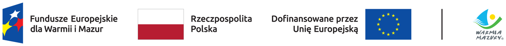

Firma Sebastian Pażyszek uzyskała dotację z Unii Europejskiej na projekt:
Rozwój działalności firmy Sebastian Pażyszek na terenach przygranicznych w wyniku wprowadzenia nowej usługi

Cel projektu
Celem projektu jest rozwój przedsiębiorstwa poprzez inwestycję na terenie przygranicznym. W wyniku realizacji projektu firma wprowadzi do swojej oferty nową usługę, tj. wynajem sprzętu na potrzeby wypraw dla nurków.
Planowane efekty
Efektem projektu będzie m.in. zniwelowanie zjawiska sezonowości, urozmaicenie pobytu dla potencjalnych klientów oraz zapewnienie możliwości korzystania ze zróżnicowanych atrakcji turystycznych.
Wartość całkowita projektu737 385,00 zł
Wkład z Funduszy Europejskich389 675,00 zł